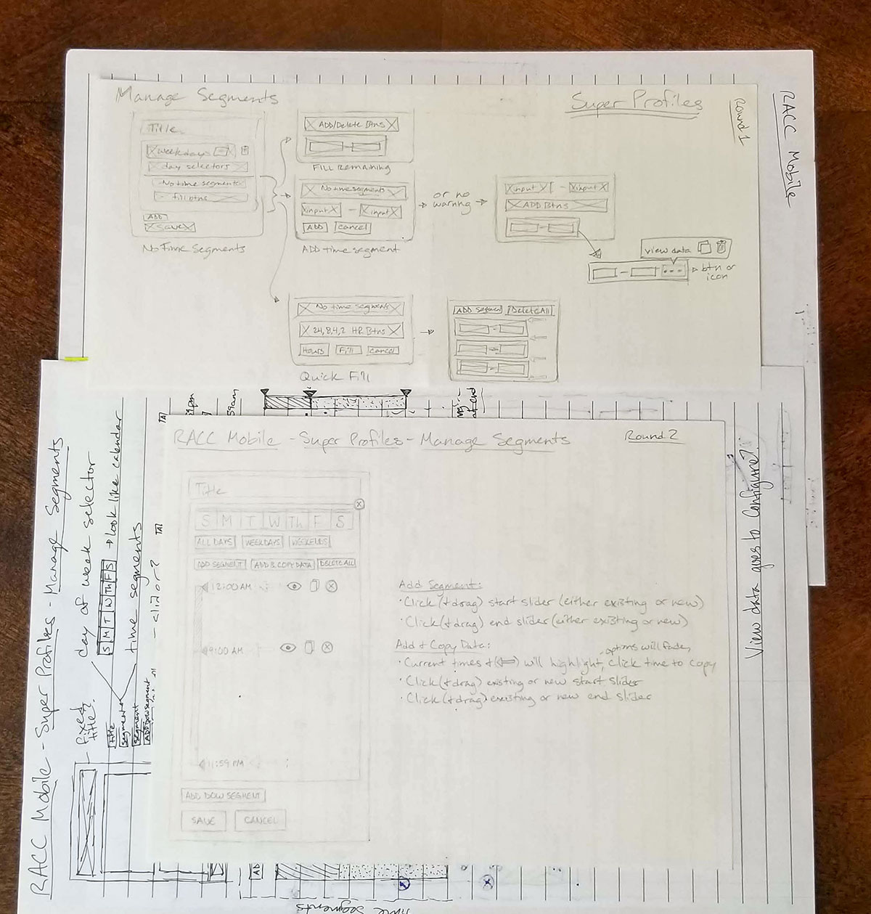

Call centers handle millions of calls from their customers each day, and RACC does the heavy lifting. RACC (Routing and Call Control) is a voice engine that allows technical account managers and call center users to configure their call traffic and get their users to the correct destination. As Vail Systems' largest product, RACC's web application has grown over its ten years of existence, but the user interface is limited in that it was built for desktop only.
I was tasked with making RACC mobile compatible for a large incoming customer. RACC was already partly converted to use my SCSS framework which included responsiveness, making most pages responsive from the conversion, but a few major features would need a redesign. Super Profiles and Quick edit are features in two separate locations in the portal, but for the most part, allowed users to perform the same actions. Both features allowed a user to configure their call traffic using a custom weekly schedule, so I tackled these together. Their only difference is in the type of data users can configure. The outcome was the two features using the same components, a similar user flow, and both could now easily be used on mobile.
Redesign the Super Profiles and Quick Edit features to create a seamless and user-friendly mobile experience that minimizes differences between the two features.
My largest struggle through the redesign was that I didn't know how these features worked initially. I spent a couple of weeks speaking with stakeholders and technical account managers to understand the benefits of the features, how to use them, and what their pain points were, then recreated the current user flows so I could identify commonalities, differences, strengths, and weaknesses.
Although Super Profiles and Quick Edit both include a scheduler and allow users to configure data, there were multiple differences between their user flows. Quick Edit allowed users to complete all tasks within a single page, while Super Profiles split the scheduler and data configuration across multiple pages.
The original Super profiles page included a button to another page where users could manage the time segments, as well as a list of the same segments which each allowed users to configure data for each segment on a third page.
The original Quick Edit allows users to both manage time segments and configure the data for each in the same view but is still cumbersome to use.
I began working with Super Profiles to combine it into a single page, with plans to adapt Quick Edit to the new design soon after. I created sketch after sketch of ideas for the mobile design and collaborated with my manager to critique my sketches and whiteboard new solutions.
One of the pain points of the original scheduler was that it had no error prevention. The form forced users to input the time segments manually but did not alert users to the multiple criteria the times needed to follow. The time segments in the scheduler were required to add up to an entire day, but there wasn't any validation around it. Instead, I replaced the manual time entries with a large slider, where users could add dividing points in the timeline preventing any missing or overlapping segments. The slider also compacted the time of day portion of the scheduler, allowing it to fit easily on mobile and act as a high-level visualization for the schedule.
The top sketch is the final of the first round of sketches, which is the original design translated to mobile. The bottom sketch is the final sketch of round two where I created the slider instead of time inputs.
We whiteboarded the slider idea after round two to assess and enhance its usability; this image is of Quick Edit.
The final sketch from the third and final round of sketches included changes made while whiteboarding, and was drawn to the full length of a (shorter) real-world example to demonstrate page length.
Once we were satisfied with the initial design, I recreated my sketches as prototypes in Figma for user testing. I collaborated with a coworker to create and run the user tests with some of our internal users, focusing on the usability of the new slider. As expected, some testers didn't notice that the slider was interactive and could not complete the task but once given instruction (our customers receive training on features), all testers were able to use the slider smoothly.
A collapsed view of the Super Profiles prototype used for testing.
A cropped view of the slider prototype both open and closed used for testing Super Profiles.
The testing also revealed some minor pain points in the design, but most were easily addressable and adjusted in the prototypes. I also created prototypes for the redesigned desktop versions of each feature to demonstrate the new slider on desktop. Finally, we completed another round of testing for both mobile and desktop versions, and I presented the redesign to stakeholders.
Final mobile Super Profiles Prototype
Final desktop Super Profiles Prototype